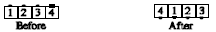

From a general line of four with both ends facing the same direction: Dancer on the right end Trades to the other end of the line. Meanwhile, each of the other dancers, in a single, smooth motion, faces the vacated spot, takes a step forward, and turns another 1/4 in the same direction as first turned. Finishes in a line facing the opposite direction.
